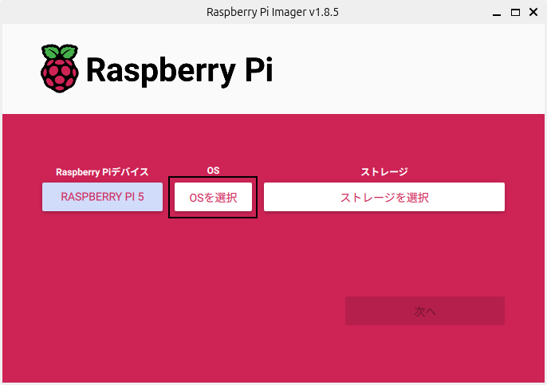
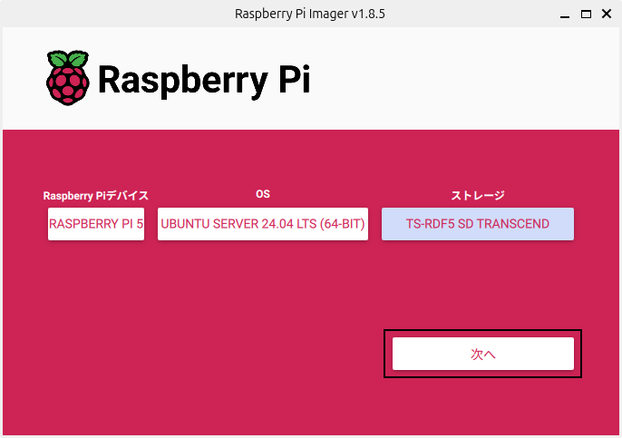
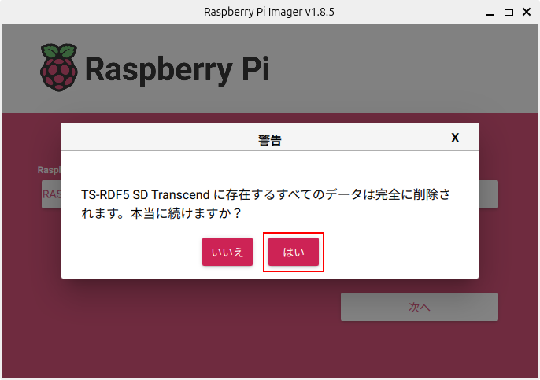

7. Linuxのインストール（Raspberry Pi）¶
Linuxはオープンソースのオペレーティングシステム（OS）です。
Raspberry PiではUbuntu Server 24.04 LTSを使います。
7.1. Raspberry Pi Imagerのインストール¶
公式のディスクイメージ書き込みツールRaspberry Pi Imagerを使ってSDカードにディスクイメージを書き込みます。
詳しくは、 Raspberry Pi OSのHP を参照してください。
以下のコマンドを実行してRaspberry Pi Imagerをインストール。
ubuntu@mbc084:~$ sudo apt install rpi-imager
7.2. ディスクイメージの書き込み¶
Raspberry Pi Imagerを起動。
[デバイスを選択]ボタンをクリック。
「Raspberry Pi 5」を選択。

[OSを選択]ボタンをクリック。
「Other general-purpose OS」を選択。

「Ubuntu」を選択。

［Ubuntu Server 24.04.2 LTS (64bit)］を選択。

SDカードを挿入して、[ストレージを選択]ボタンをクリック。

挿入したSDカードを選択。

[次へ]ボタンをクリック。
[設定を編集する]ボタンをクリック。

次の通り入力し[保存]ボタンをクリック。
「ホスト名」にチェック
ホスト名：zumo01.local
「ユーザー名とパスワードを設定する」にチェック
ユーザー名：pi
パスワード：hirate2020
「ロケールを設定する」にチェック
タイムゾーン：Asia/Tokyo
キーボードレイアウト：jp

[はい]ボタンをクリック。

[はい]ボタンをクリック。
書き込み中。

［続ける］ボタンをクリック。

Raspberry Pi Imagerを終了し、SDカードをUnmountして取り出す。
7.3. Linuxへのログイン¶
Raspberry Piにモニター、キーボード、LANケーブルを接続してください。
SDカードを挿入して電源を入れます。
しばらくすると次のような場面が表示されます。
Ubuntu 24.04 LTS zumo01 tty1
zumo01 login: pi
Password: hirate2020
ユーザー名にpi、パスワードにhirate2020を入力してログイン。
※パスワードは表示されません
Welcome to Ubuntu 24.04 LTS (GNU/Linux 6.8.0-1004-raspi aarch64)
・・・
pi@zumo01:~$